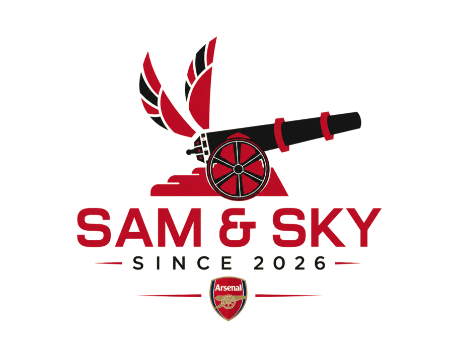
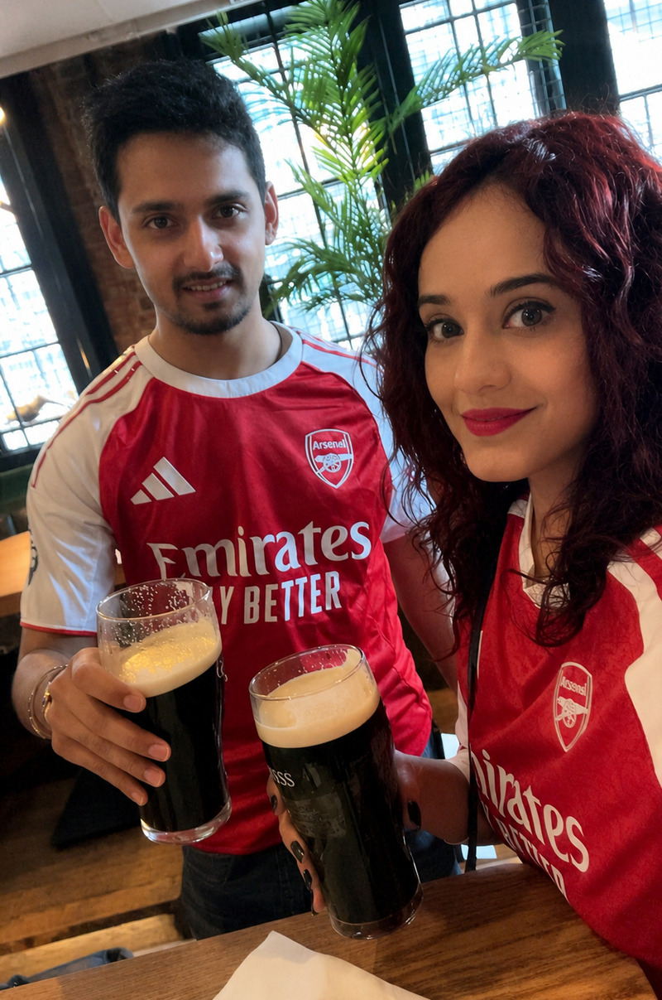

Fantasy Premier League · Fan Community
Two friends, one badge, and a season-long battle for FPL glory. Sam & Sky is our fan-run fantasy football community — built in the spirit of North London, run with a lot of banter, and open to anyone who wants in on the league.
Sam & Sky started as a couple of mates arguing about wildcards and captaincy picks, and it grew into a full community: two Fantasy Premier League mini-leagues, a Discord full of matchday chat and transfer tips, and live meetups via Eventbrite. If you love the Gunners and you love FPL, you're already one of us.
Two competitive leagues to join (General Classic and the Tdot Gooners League), a Discord server for live matchday banter, and meetup events through Eventbrite. Simple, free, and built around one thing: making FPL more fun with people who actually care about the Arsenal.

This community and site are run by Sam and Aakash — two Arsenal fans who turned a season-long FPL rivalry into a full-blown league. Thanks for stopping by, and see you in the mini-league table.